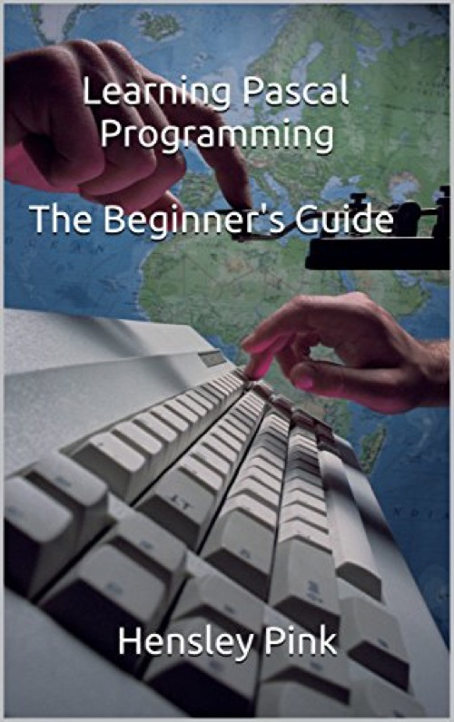

Learning Pascal Programming The Beginner's Guide
Published by : Amazon
Writed by : Hensley Pink
Published date : 05/03/2012
Language :  English
English
Web site : https://amzn.to/3nkSTl8
About Learning Pascal Programming The Beginner's Guide
‘Learning Pascal Programming: The Beginner's Guide’ is intended mainly for teachers and students of Information Technology in high schools in preparation for external examinations in grade 11 or 5th form. It is also suitable for every person who needs an introduction to programming in Pascal. It is quite a simple but effective introduction to Pascal, in general, and to Turbo Pascal for windows, in particular.
The book focuses on identifying basic Pascal principles in relation to the programming task and applying them to programming scenarios. As a result, a substantial portion of the book is like a manual or a specific guide. Many program examples may be typed into the TPW (Turbo Pascal for Windows) editor and executed. Modification of the examples, and also a lot of experimentation with specific aspects of the code is strongly encouraged. This practice will quicken the learning process and more likely foster an early appreciation and understanding of the material that is presented.
Any student who uses ‘Learning Pascal Programming: The Beginner's Guide’ optimally, shall surely reap his/her great reward in terms of the SBA (school based assessment) where applicable and in external exams.
Where to buy ?
If this book is still available for sale, you probably can order it on its website.